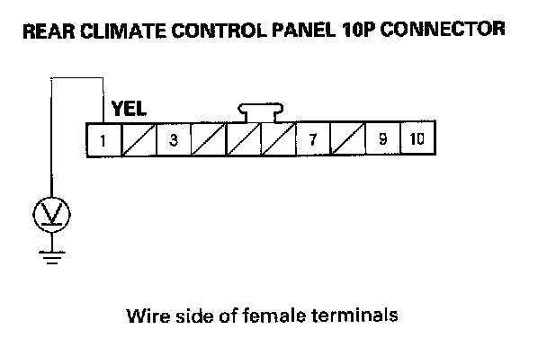
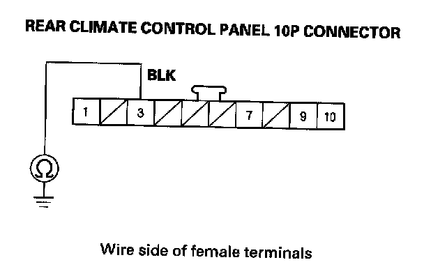
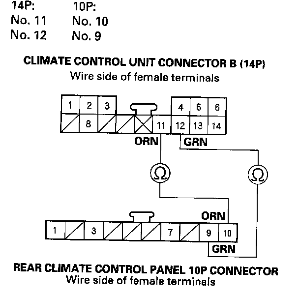
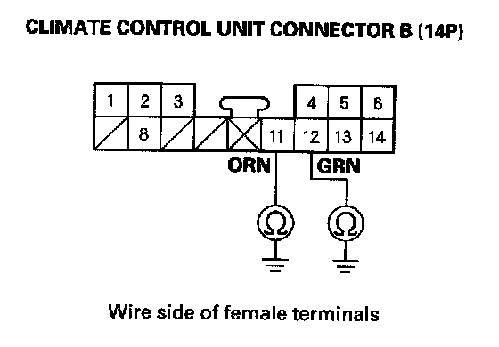
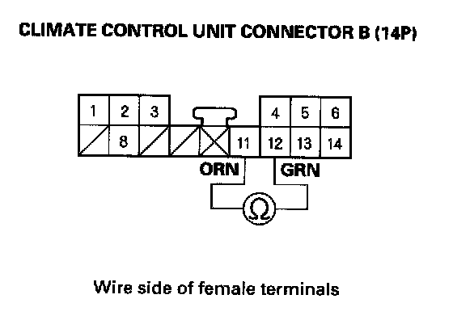

B2965
DTC B2965: Climate Control Unit Lost Communication with Rear Climate Control Panel1. Clear the DTC with the HDS.
2. Turn the ignition switch OFF and then ON (II).
3. Do the self-diagnostic with the HDS.
4. Check for DTCs.
Is DTC B2965 indicated?
YES - Go to step 5.
NO - Intermittent failure, check for loose wires or poor connections on the rear climate control panel and climate control unit circuit.
5. Turn the ignition switch OFF.
6. Disconnect the rear climate panel 10P connector.
7. Turn the ignition switch ON (II).

8. Measure the voltage between the rear climate control panel 10P connector terminal No. 1 and body ground.
Is there battery voltage?
YES - Go to step 9.
NO - Repair open in the wire between the No. 30 (10 A) fuse in the under-dash fuse/relay box and the rear climate control panel.
9. Turn the ignition switch OFF.

10. Check for continuity between the rear climate control panel 10P connector terminal No. 3 and body ground.
Is there continuity?
YES - Go to step 11.
NO - Check for an open in the wire between the rear climate control panel and body ground. If the wire is OK, check for poor ground at G506.
11. Disconnect climate control unit connector B (14P).

12. Check for continuity between the following terminals of climate control unit connector B (14P) and the rear climate control panel 10P connector.
Is there continuity?
YES - Go to step 13.
NO - Repair open in the wire(s) between the climate control unit and the rear climate control panel.

13. Check for continuity between body ground and climate control unit connector B (14P) terminals No. 11 and No. 12 individually.
Is there continuity?
YES - Repair short to body ground in the wire(s) between the climate control unit and the rear climate control panel.
NO - Go to step 14.

14. Check for continuity between climate control unit connector B (14P) terminals No. 11 and No. 12.
Is there continuity?
YES - Repair short in the wires between the climate control unit and the rear climate control panel.
NO - Substitute a known-good rear climate control panel, and recheck. If the symptom/indication goes away, replace the original rear climate control panel.